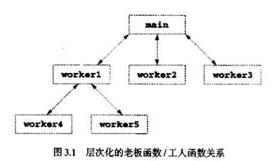

教学目标
●了解如何由函数模块化地构造程序
●能够生成新函数
●了解函数之间传递信息的机制
●介绍使用随机数产生器的模拟技术
●了解标识符如何限于特定程序区域
●如何编写和使用调用自己的函数
C++中的模块称为函数(function)和类(class)。C++程序一般是将程序员编写的新函数与C++标准库(standard library)中提供的预装函数组合而成的，通常是将程序员编写的新类与各种类库中提供的预装类组合而成的。本章主要介绍函数，第6章开始将详细介绍类。
C++标准库提供了丰富的函数集合，可以进行常用数学计算、字符串操作、字符操作、输人/输出、错误检查和许多其他有用的操作。这就使程序员的工作更加轻松，因为这些函数提供了程序员需要的许多功能。C++标准库函数是在C++编程环境中提供的。
要熟悉C++标准库提供的类和函数集合。
不要事事从头做起。要尽可能利用C++标准库提供的函数而不是生成新函数，从而减少程序开发时间。
利用C++标准库提供的函教能使程序可移植性更强。
不要改写现有库程序以使其更有效，这些过程的性能通常已经是最优的。
程序员可以通过编写函数定义程序中多处使用的特定任务，这些通常称为程序员定义的函数(prograrmmer-defined function)。定义函数的语句通常只写一次，这些语句是其他函数无法访问的。
通过函数调用(function call)来调用(invoke，即让其完成指定任务)函数。函数调用指定函数名和提供被调用函数完成工作所需的信息<作为参数L可以把这种形式与管理的层次形式相比，老板(调用函数或调用者)要求工人(被调用函数)完成任务并在任务完成之后返回(即报告)结果。老板函数并不知道工人函数如何完成工作。工人又可能调用其他工人函数，这是老板所不知道的。稍后会介绍这种隐蔽实现细节如何促进良好的软件工程。田3.1显示了main函数以层次方式和几个工人函数通信。注意workerl是worker4和worker5的老板函数。函数之间的关系也可能与图中所示的层次结构有所不同。
数学函数库使程序员可以进行某些常见数学计算。我们这里用各种数学库函数介绍函数概念。本书稍后会介绍c++标准库中的许多其他函数。
调用函数时，通常写上函数名，然后是一对括号，括号中写上函数参数(或逗号分隔的参数表)。例如程序员可以用下列语句计算和打印900.0的平方根：
cout << sqrt(900.O)；
执行这个语句时，数学库函数sqrt计算括号中所包含数字(900.0)的平方根。数字900.0是sqrt函数的参数。上述语句打印30。sqrtd函数取double类型参数，返回double类型结果。数学函数库中的所有函数都返回double类型结果。要使用数学库函数，需要在程序中包含math.h头文件(这个头文件在新的C++标准库中称为cmath)。
使用数学库孙数而不包括math.h文件是个语法错误。程序中使用的每个标准库函数都应包括标准头文件。
函数参数可取常量、变量或表达式。如果c1=13.0、d=3.0和f=4.0，则下列语句：
cout << sqrt (cl + d * f)；
计算并打印13.0+3.0*4.0=25.0的平方根，即5(因为C++通常对没有小数部分的浮点数不打印小数点和后面的零)。
图3.2总结了一些数学库函数。图中变量x和y为double类型。
------------------------------------------------------------------------------
函数 说明 举例
------------------------------------------------------------------------------
ceil(x) 将x取整为不小于x的最小整数 ceil(9.2)=10.0
ceil(-9.8)=-9.0
cos(x) x(弧度)的余弦 cos(0.0)=1.0
exp(x) 指数函数ex exp(1.0)=2.71828
exp(2.0)=7.38906
fabs(x) x的绝对值 x>0,abs(x)=x
x=0,abs(x)=0.0
x<0,abs(x)=-x
floor(x) 将x取整为不大于x的最大整数 floor(9.2)=9.0
floor(-9.8)=-10.0
fmod(x,y) x/y的浮点数余数 fmod(13.657,2.333)=1.992
log(x) x的自然对数(底数为e) log(2.718282)=1.0
log(7.389056)=2.0
log10(x) x的对数(底数为10) log(10.0)=1.0
log(100.0)=2.0
pow(x,y) x的y次方(xy) pow(2,7)=128
pow(9,.5)=3
sin(x) x(弧度)的正弦 sin(0.0)=0
sqrt(x) x的平方根 sqrt(900.0)=30.0
sqrt(9.0)=3.0
tan(x) x(弧度的正切 tan(0.0)=0
-------------------------------------------------------------------------------
在包含多个函数的程序中，main应实现为一组函数调用，这些函数进行大量的程序工作。
将程序函数化的目的有几个，“分而治之、各个击破”的方法使程序开发更容易管理。另一个目的是软件复用性(software reusability)，用现有函数作为基本组件，生成新程序。软件复用性是面向对象编程的主要因素。有了好的函数命名和定义，程序就可以由完成特定任务的标准化函数生成，而不必用自定义的代码生成。第三个目的是避免程序中的重复代码，将代码打包成函数使该代码可以从程序中的多个位置执行，只要调用函数即可。
每个函数只限于完成一个定义良好的任务，函数名应有效地表达这个任务，这样可以提高软件复用性。
如果无法用简单名称表达函数的作用，则可能是定义的函数要完成的任务太分散。通常应把这种函数分解为几个更小的函数。